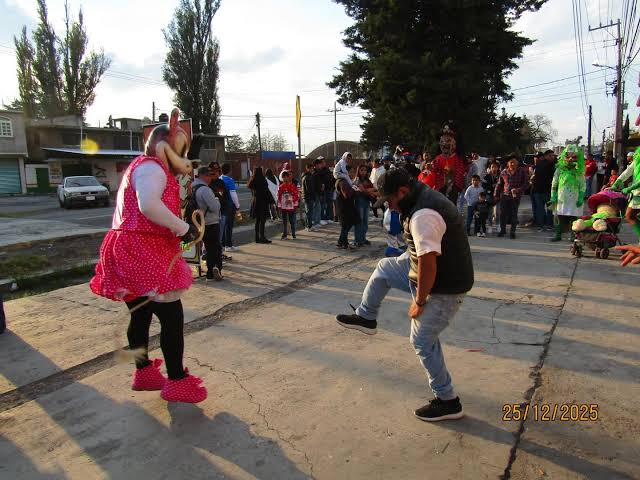
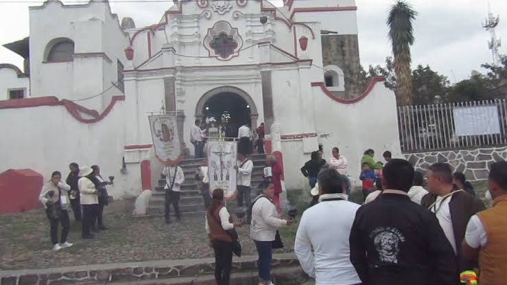
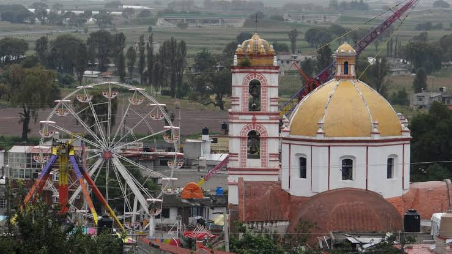
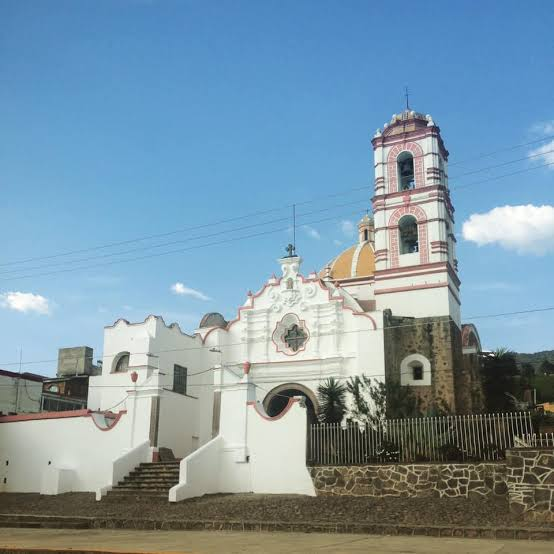
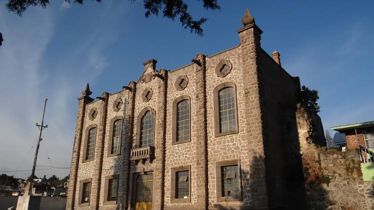
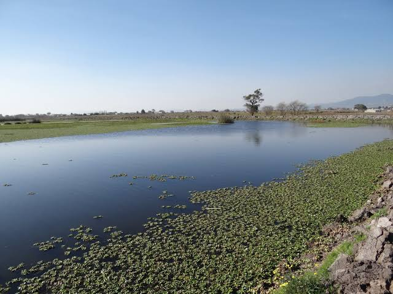
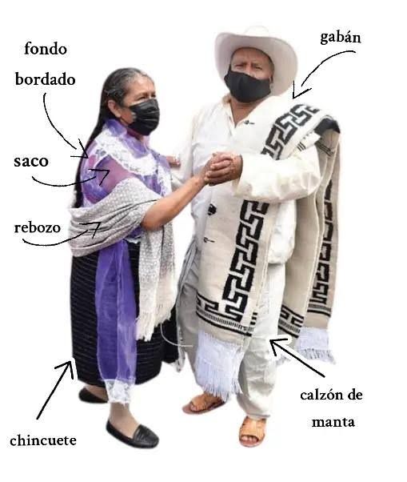
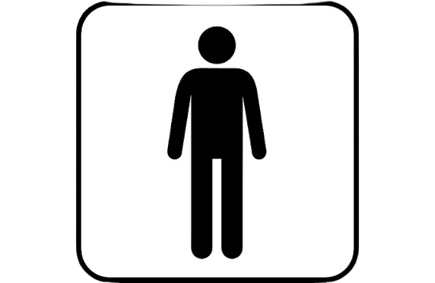

Bienvenido a la pagina principal
Este es el contenido principal de la página.
Que presentara algunas tradiciones,lugares
y comidas de San Niciolas Peralta.
Para enterarte de esto da click a lo que mas te interese
en la barra de arriba para dirigirte hacia ese apartado.
El pueblo otomí
Origen y Autodenominación
- Autodenominación: Dependiendo de la región y la variante lingüística, se llaman a sí mismos hñähñu, ñätho, ñañho o ñ’yühü. El término hñähñu del Valle del Mezquital significa "los que hablan la lengua nasal" o "los que hablan dos lenguas".
- Nombre externo: La palabra otomí proviene del náhuatl otomitl, que se ha interpretado como "flechador" o "pueblo sin residencia".
Ubicación y Territorio
- Distribución: Habitan un territorio fragmentado en el centro de México, principalmente en los estados de Hidalgo, Estado de México y Querétaro, además de comunidades en Guanajuato, Puebla, Veracruz, Tlaxcala y Michoacán.
- Población: El Instituto Nacional de los Pueblos Indígenas (INPI) ha registrado más de 660,000 integrantes de esta etnia.
Cultura y Tradiciones
- Lengua: Pertenecen a la familia lingüística otomangue. Es una lengua tonal y cuenta con múltiples variantes reconocidas.
- Artesanías: Son muy conocidos por sus bordados tradicionales (como los bordados de Tenango en Hidalgo), la elaboración de papel amate y la creación de muñecas artesanales de trapo (Lelé o María).
- Economía y gastronomía: Su base tradicional ha sido la agricultura (maíz, frijol, chile, calabaza y maguey), de la cual obtienen productos emblemáticos como el pulque, la barbacoa y el mixiote.
- Religión: Practican un sincretismo que combina el catolicismo con tradiciones prehispánicas, incluyendo el uso del temazcal y la medicina tradicional con plantas.
Tradiciones:

Paseo de los Huehuenches (La Huehuenchada):
Se celebra cada 1 de enero. Los habitantes participan en un baile tradicional y una fiesta donde es característico recibir algunos chicotazos, los cuales, según la tradición local, traen buena suerte

La Peregrinación al Santuario del Señor de Chalma:
- Fecha de inicio: Se lleva a cabo cada 31 de agosto, marcando una de las mayordomías más importantes del ciclo festivo local.
- El recorrido: El contingente sale con el Cristo de San Nicolás Peralta y recorre diversas localidades. Uno de los puntos clave es la llegada a Santiago Tianguistenco por la tarde-noche.

La Feria de San Nicolás Peralta:
Es la fiesta patronal en honor a San Nicolás de Tolentino , celebrada del 9 al 11 de septiembre en la localidad de San Nicolás Peralta, en el municipio de Lerma, Estado de México
Lugares

Parroquia de San Nicolás Peralta:
- Construcción: Data del siglo XVIII y estuvo bajo el resguardo de la Orden de los Carmelitas Descalzos, quienes administraban la hacienda local.
- Cercanía histórica:Se encuentra muy cerca del histórico Casco de la Hacienda de San Nicolás Peralta, la cual perteneció en el siglo XIX a personajes como Ignacio de la Torre y Mier.

Biblioteca de San Nicolás Peralta "Manuel Bernal"
- Nombre oficial: Biblioteca Pública Municipal "Manuel Bernal" (Nº de Colección: 6296 en la Red Nacional de Bibliotecas Públicas)
- Ubicación:San Nicolás Peralta, Lerma, Estado de México (en la zona cercana a calles como Aldama, Ignacio Rayón e Isidro Fabela)

Laguna de San Nicolás Peralta:
- Ubicación:Se encuentra a una altitud aproximada de 2,589 metros sobre el nivel del mar.
- Naturaleza:No es un lago tradicional, sino un humedal de gran valor ecológico integrado al sistema hidrológico del Valle de Lerma.
- Actividades: Es frecuentada para la pesca recreativa, paseos en pequeñas lanchas, fotografía de paisaje y recorridos al aire libre.
- Historia cercana:En la zona se encuentra el histórico Casco de la Hacienda de San Nicolás Peralta, una antigua propiedad de gran relevancia en la región que perteneció a Ignacio de la Torre y Mier.
Vestimenta:


Vestimenta del hombre otomí:
- Calzón de manta:Pantalón tradicional de tela de manta blanca.
- Camisa de manta: Camisa blanca de manga larga o corta, con detalles bordados a mano en punto de cruz en el pecho, el cuello o los puños.
- Faja:Fajilla tejida en la cintura.
- Sombrero y calzado:Sombrero de palma (que puede llevar adornos como listones o plumas) y huaraches de cuero.

Vestimenta de la mujer otomi:
- Chincuete (enredo): Es una falda amplia y larga hecha de lana, comúnmente en color azul marino o negro con líneas de colores como verde, naranja, amarillo, blanco o morado.
- Blusa:Confeccionada en popelina o algodón de manga corta, decorada con bordados a mano de motivos florales, geométricos o de fauna local (destacando el pepenado de doble vista).
- Quexquémetl:Una capa o poncho tradicional tejido en telar de cintura con hilos de lana, algodón o artisela, lleno de color.
- Faja y accesorios: Una faja tejida para sujetar la falda, complementada a veces con rebozos.